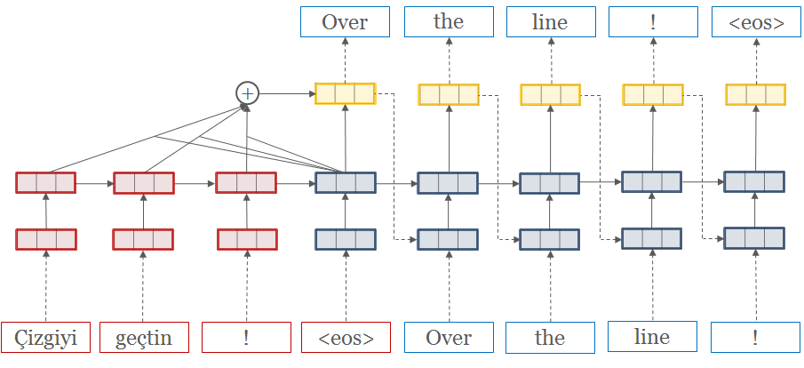

The Transformer from “Attention is All You Need” is a new architecture that utilizes the Attention concept to help improve the performance of NLP tasks. This passage follows the pytorch implementation in “The Annotated Transformer” of Harvard’s NLP group to compactly illustrate the structure of the Transformer.
Background
In traditional (RNN or CNN) models, the number of operations required to relate signals from two arbitrary input or output positions grows in the distance between positions, which makes it more difficult to learn dependencies between distant positions.
To solve the issue above, the Transformer comes into being, which reduces the operations to a constant number. It eschews recurrence or convolution and relies entirely on an attention mechanism to draw global dependencies between input and output.
Model Architecture
Most competitive neural sequence transduction models have an encoder-decoder structure as below:

Here, the encoder maps an input sequence of symbol representations $\left(\mathbf{x}_{1}, \dots, \mathbf{x}_{n}\right)$ (always represented by a $(n \times d_{model})$ matrix) to a sequence of continuous representations $\mathbf{z}=\left(z_{1}, \dots, z_{n}\right)$. Given $\mathbf{z}$, the decoder then generates an output sequence $\left(\mathbf{y}_{1}, \ldots, \mathbf{y}_{m}\right)$($(m \times d_{model})$ matrix) of symbols one element at a time.
1 | class EncoderDecoder(nn.Module): |
1 | class Generator(nn.Module): |
The Transformer follows this overall architecture using stacked self-attention and point-wise, fully connected layers for both the encoder and decoder, shown in the left and right halves of the figure below, respectively.

Encoder and Decoder Stacks
Encoder
The encoder is composed of a stack of $N=6$ (larger to increase model complexity) identical layers.
1 | def clones(module, N): |
Note：nn.ModuleList and nn.Sequential in PyTorch
nn.ModuleListholds submodules in a list and can be indexed like a regular Python list, but modules it contains are properly registered (can be displayed byprint(module)). If a Python list is used, these modules will not be registered, so their parameters cannot be updated (trained).nn.Modulelistonly stores different submodules together. There is no order between these modules. The execution order of them is determined by theforwardfunction.nn.Sequentialimplements the internalforwardfunction, and the modules in it must be arranged in order. So it must be ensured that the output size of the previous module is consistent with the input size of the next module.nn.ModuleListis more commonly used in the case that you want to customize theforwardfunction. For example, the output of the current layer needs to be fused with the previous layer and then be forwarded to next layer.
Each layer has two sub-layers. We employ a residual connection around each of the two sub-layers, followed by layer normalization. That is, the actual output of each sub-layer is $LayerNorm(\mathbf{x}+Sublayer(\mathbf{x}))$.
1 | class LayerNorm(nn.Module): |
Note：nn.Parameter and nn.Module.register_buffer in PyTorch
nn.Parameteraretorch.Tensorsubclasses and it will be automatically added to the list of its parameters when used withModules. (Appear e.g. inparameters()iterator.)nn.Module.register_buffercan add named tensors (buffer) to the module, but these tensors are not meant to learn via gradient descent. They can be iterated byModule.buffers().Buffers will go to GPU with the module in
Module.to(), and they will be saved together with the module inModule.state_dict(). Buffer is used to saving intermediate status, for example, BatchNorm’srunning_meanis not a parameter, but is part of the persistent state.1
2
3
4
5
6
7
8
9
10
11
12
13
14
15
16class SublayerConnection(nn.Module):
"""
A residual connection followed by a layer norm.
In practical implementation, the norm is first for better experimental results.
"""
def __init__(self, size, dropout):
"""
Module attributes will automatically be added to its parameters list
(if it's registerable).
"""
super(SublayerConnection, self).__init__()
self.norm = LayerNorm(size)
self.dropout = nn.Dropout(dropout)
def forward(self, x, sublayer):
return x + nn.dropout(sublayer(self.norm(x)))
To facilitate these residual connections, *all sub-layers in the model, as well as the embedding layers, produce outputs of dimension $d_{model} = 512$.
The first sub-layer is a multi-head self-attention mechanism, and the second is a simple, position-wise fully connected feed-forward network.
1 | class EncoderLayer(nn.Module): |
1 | class Encoder(nn.Module): |
Decoder
The decoder is also composed of a stack of $N=6$ identical layers.
In addition to the two sub-layers in each encoder layer, the decoder inserts a third sub-layer, which performs multi-head attention over the output of the encoder stack. Similar to the encoder, it employs residual connections around each of the sub-layers, followed by layer normalization.
1 | class DecoderLayer(nn.Module): |
1 | class Decoder(nn.Module): |
Thie paper also modifies the self-attention sub-layer in the decoder stack to prevent positions from attending to subsequent positions (data leakage).
1 | def subsequent_mask(length): |
This masking, combined with fact that the output embeddings are offset by one position, ensures that the predictions for position $i$ can depend only on the known outputs at positions less than $i$.
1 | self.trg = trg[:, :-1] # ["<SS>", "Hola", ", ", "como", "estás", "?"] |
Attention
An attention function can be described as mapping a query and a set of key-value pairs to an output, where the query, keys, values, and output are all vectors. The output is computed as a weighted sum of the values, where the weight assigned to each value is computed by a compatibility function of the query with the corresponding key.
Why Attention is Needed?
Language heavily relies on context. For example, the pronouns in sentences refer to nouns.
Attention is such a mechanism that encodes these kinds of reliances. It bakes model’s understanding of context of a certain word (its relevant words) and explains that word using this context (contextual embedding). Basically, the attention mechanism is a feature fusion process.
The Attention Mechanism
The two most commonly used attention functions are additive attention, and dot-product attention. The two are similar in complexity, but dot-product attention can be implemented using highly optimized matrix multiplication code (faster).
The particular modified attention used in paper is called “Scaled Dot-Product Attention“. The input consists of queries and keys of dimension $d_k$ and values of dimension $d_v$. We compute the dot products of the query with all keys.
Since for large values of $d_k$, the dot products grow large in magnitude ($q \cdot k=\sum_{i=1}^{d_{k}} q_{i} k_{i}$), pushing the softmax function into regions where it has extremely small gradients. To counteract this effect, dot products was scaled by $\sqrt{d_{k}}$. Finally, a softmax function is applied to obtain the weights on the values.

In practice, we compute the attention function on a set of queries simultaneously, packed together into a matrix $Q$ ($n\times d_{k}$). The keys and values are also packed together into matrices $K$ ($n\times d_{k}$) and $V$ ($n\times d_{v}$). We compute the matrix of outputs as:
$$ \text {Attention}(Q, K, V)=\operatorname{softmax}\left(\frac{Q K^{T}}{\sqrt{d_{k}}}\right) V$$1 | def attention(query, key, value, mask=None, dropout=None): |
Note:
torch.Tensor.masked_fill(): Fills elements ofselftensor withvaluewheremaskis True.torch.matmul(A, B): If the dimension of both A and B is greater than 2,batch_mat_mulwill be called, which will do an element-wise matrix multiplication for the batch of A and B.- A and B can be different except for the last two dimensions. Other dimensions (batch size) should be the same.
- Last two dimensions of A and B should meet the requirements of matrix multiplication.
torch.Tensor.view/flatten(): The Tensor will be folded from ‘inner’ dimension to ‘outer’ dimension.
Multi-head Attention
Multi-head attention allows the model to jointly attend to information from different representation subspaces at different positions. It works as following:$$\text { MultiHead }\left.(Q, K, V)=\text { Concat(head }_{1}, \ldots, \text { head }_{\mathrm{h}}\right) W^{O}$$, where $\text {head}_i=\text {Attention}(QW_i^Q,KW_i^K,VW^V_i)$ and the projections are parameter matrices $W_{i}^{Q} \in \mathbb{R}^{d_{\text {model }} \times d_{k}}, W_{i}^{K} \in \mathbb{R}^{d_{\text {model }} \times d_{k}}, W_{i}^{V} \in \mathbb{R}^{d_{\text {model }} \times d_{v}} \text { and } W^{O} \in \mathbb{R}^{h d_{v} \times d_{\text {model }}}$.
In this paper, it employs $h=8$ parallel attention layers, or heads. For each of these, it uses $d_k=d_v=d_{model}/h=64$. Due to the reduced dimension of each head, the total computational cost is similar to that of single-head attention with full dimensionality.
1 | class MultiHeadedAttention(nn.Module): |
Note:
torch.Tensor.contiguous(): It is generally used aftertorch.Tensor.transpose()ortorch.Tensor.permute()and beforetorch.Tensor.view(). After dimension transformation, the sensor is no longer stored continuously in memory. However,torch.Tensor.view()operation requires continuous memory storage of the tensor, so it needscontiguous()to return a continuous copy.
Intuitive Explanation of Attention
Self-attention is processed along the path of each token in the segment. The significant components are three vectors:
- Query: The query vector is a representation of the current word used to score against all the other words’ keys.
- Key: The key vectors are like labels for all the words and are matched against for the relevant word.
- Value: The value vectors are actual word representations. Once we’ve scored how relevant each word is, these values will be added up to represent the current word.
An analogy is to think of Attention like searching through a filing cabinet as the figure below. The query is like a sticky note with the topic you’re researching. The keys are like the labels of the folders inside the cabinet. When you match the tag with a sticky note, we take out the contents of that folder, and these contents are the value vectors. Except you’re not only looking for one value but a blend of values from a blend of folders.
The Masked Self-Attention

The masking step always happens after the dot product of the query and the key and before applying softmax, namely when you get the score (matrix). It is just going to set minus infinity to all the masked entries in the score matrix. For example:
Applications of Attention in our Model
The Transformer uses multi-head attention in three different ways:
- Self-attention layers in encoder. Each position in the encoder can attend to all positions in the previous layer of the encoder.
- Self-attention layers in the decoder. They allow each position in the decoder to attend to all positions up to and including that position. It prevents leftward information flow in the decoder to preserve the auto-regressive property.
- In “encoder-decoder attention“ layers, the queries come from the previous decoder layer, and the memory keys and values come from the output of the encoder. This allows every position in the decoder to attend over all positions in the input sequence, which mimics the typical encoder-decoder attention mechanisms in sequence-to-sequence models.
Position-wise Feed-Forward Networks
In addition to attention sub-layers, each of the layers in our encoder and decoder contains a fully connected feed-forward network. This consists of two linear transformations with a ReLU activation in between.
$$\mathrm{FFN}(x)=\max \left(0, x W_{1}+b_{1}\right) W_{2}+b_{2}$$The dimensionality of input and output is $d_{model}=512$, and the inner-layer has dimensionality $d_{ff}=2048$.
1 | class PositionwiseFeedForward(nn.Module): |
Reference
Github: OpenNMT-py
Medium: Dissecting BERT Part 1: Understanding the Transformer
Blog: The Illustrated Transformer
Blog: The Illustrated GPT-2
Paper: Neural Machine Translation by Jointly Learning to Align and Translate
Paper: Attention is All You Need
StackOverflow: ModuleList and Sequential in PyTorch
StackOverflow: Understanding torch.nn.Parameter
Blog: Tensorflow中矩阵乘法matmul和multiply详解
Zhihu: PyTorch中矩阵乘法总结
Zhihu: Pytorch之contiguous函数